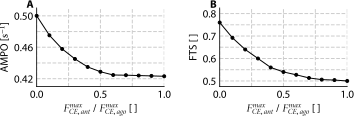
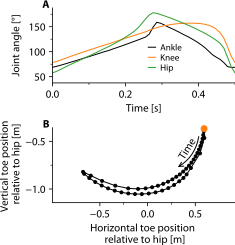
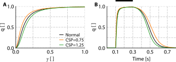

| Parameter | AMPO | CF | FTS | $\Delta L_{CE}$ |
|---|---|---|---|---|
| Excitation dynamics | ||||
| $a_{act}$ | -3.8 | -5.0 | -0.0 | 2.1 |
| $m$ | -4.1 | -6.0 | -0.5 | 2.0 |
| $q_0$ | -0.1 | 0.1 | 0.0 | 0.0 |
| Contraction dynamics | ||||
| $a^{rel}$ | 2.2 | 1.6 | -0.7 | 1.0 |
| $b^{rel}$ | -5.4 | -3.5 | 1.2 | -1.6 |
| $F_{asymp}$ | 0.9 | 1.6 | 0.8 | -0.4 |
| $r_{as}$ | 0.6 | 0.5 | 0.7 | 0.4 |
| $r_{slope}$ | 0.0 | 0.0 | -0.0 | -0.0 |
| $w$ | -3.5 | 4.5 | 0.1 | -7.7 |
| AVG ± STD | 2.3 ± 1.8 | 2.6 ± 2.2 | 0.7 ± 0.5 | 1.8 ± 2.3 |
| A sensitivity analysis was performed for different muscle model parameters. Each parameter was varied by ±10% relative to its standard values. Changes in maximally attainable AMPO, optimal cycle frequency (CF), FTS and CE length excursion ($\Delta L_{CE}$) are all expressed relatively to the values obtained with the standard model parameters. | ||||
6 General discussion
In locomotor activities such as cycling, rowing, speed skating, and running, performance is largely determined by the average mechanical power output (AMPO) produced by muscles over successive stretch–shortening cycles (SSCs). In each periodic SSC, a muscle lengthens from its initial length and subsequently shortens back to that same length. The primary aim of this thesis was to examine how variations in the parameters defining SSCs—cycle frequency, FTS, and length excursion1—influence the maximally attainable AMPO of muscle over one full periodic cycle. In addition, this thesis investigated how constraints affect the maximally attainable AMPO. The results presented in the preceding chapters, together with several preliminary findings not included in this thesis, give rise to a number of broader points of discussion. We introduce these topics below and then elaborate on each of them in separate sections.
The first section reflects on the methodological transition from highly controlled in situ rat experiments (Chapter 3) to less controlled human in vivo experiments (Chapter 4). Although Chapter 3 and Chapter 4 addressed similar questions, the experimental paradigms differed substantially in terms of the control of MTC length, the control of stimulation, the specificity of the measured output, and the degree of model individualisation. We discuss these differences to clarify why strong agreement between model predictions and experimental measurements in rat in situ experiments does not automatically imply that strong agreement is to be expected in human in vivo experiments.
The second section examines how sensitive the AMPO-optimal SSC behaviour is to muscle properties. Since estimating muscle properties inevitably involves errors and because properties also vary between individuals, it is important to assess how robust the model predictions are to variations in muscle properties. Ideally, the predicted optimal behaviour would remain largely unchanged across a realistic range of muscle property values. To explore this, a sensitivity analysis is conducted in which individual muscle property was systematically varied, complemented by additional analysis investigating the influence of muscle fibre type.
The third section addresses the sensitivity of AMPO to variations in three SSC parameters: cycle frequency, FTS and length excursion. Typically, we visualised their influence with contour plots. A question that arises at this point is: how sensitive is the maximally attainable AMPO to variations in these three SSC parameters? We explain why it is difficult to make general statements about the sensitivity to individual SSC parameters.
The fourth section extends the analysis from isolated muscles to the musculoskeletal level. In most motor tasks, the objective is not to maximise AMPO of a single muscle, but rather to maximise AMPO summed over multiple muscles. Muscles spanning the same joint cannot all operate at their individual optimum simultaneously. Consequently, the joint kinematics that maximise summed AMPO inherently reflect a trade-off. We discuss this trade-off using a simple model of an agonist-antagonist pair of muscles and a more complex model of the human lower extremity.
The fifth section considers the difference between fully imposed motion and motion that arises from the interaction between the musculoskeletal system and the environment. In this light, we compare the theoretical upper limit for AMPO of the human lower extremity with the maximally attainable AMPO predicted during isokinetic sprint cycling. We discuss the mechanisms underlying this difference.
The final section discusses the broader implications of this thesis. We explain how the present approach can be used to estimate the maximally attainable AMPO for observed SSCs in various motor tasks, and how this may help to interpret behaviour observed in these tasks. We then discuss how changing the mechanical interaction between the musculoskeletal system and the environment may allow muscles to operate closer to their AMPO-optimal SSCs. These insights provide general design principles for sport and rehabilitation equipment aimed at improving AMPO.
6.1 From in situ to in vivo experiments
In Chapter 3 and Chapter 4, experiments were combined with simulations and optimisations using a Hill-type muscle-tendon complex (MTC) model to investigate the influence of parameters defining SSCs—cycle frequency, FTS, and length excursion—on the maximally attainable AMPO. These studies involved two fundamentally different experimental paradigms: an isolated rat hindlimb muscle preparation in situ and a human knee extensor experiment performed in vivo. Although both approaches aimed to examine the influence of SSC parameters on the maximally attainable AMPO, the transition from the highly controlled in situ experiment to the substantially less controlled in vivo experiment introduced several important sources of uncertainty.
In the rat experiment, m. gastrocnemius medialis was isolated from surrounding tissue, while all nerve branches except the branch innervating m. gastrocnemius medialis were severed to ensure that contributions from surrounding muscles to the measured force were eliminated. This was confirmed by simultaneously measuring forces of m. plantaris and m. gastrocnemius lateralis. Consequently, the measured force directly reflected the mechanical behaviour of m. gastrocnemius medialis. By contrast, in the human experiment, the measured knee joint moment reflected the combined action of multiple muscles spanning the knee joint. During knee extension, EMG measurements indicated low levels of both agonist and antagonist activity, and the resulting net knee joint moment was close to zero. During knee flexion, however, EMG recordings suggested substantial antagonist co-activation, with activity reaching approximately 17% of activity during a maximal voluntary contraction. Consequently, the experimentally measured net knee joint moment no longer represented the isolated behaviour of a single MTC, which complicated direct comparison between model predictions and measurements.
A second important distinction concerns control of MTC length over time, \(L_{MTC}(t)\). In the rat experiments, MTC was directly connected to the motor and thus under full experimental control. In the human experiments, however, the muscle remained embedded within the musculoskeletal system. Consequently, the motion could not be imposed directly at the MTC level, but only indirectly by imposing knee joint angle over time. Due to inter-individual differences in moment arms and musculoskeletal geometry, identical knee joint kinematics do not correspond to identical \(L_{MTC}(t)\) across participants. Therefore, the actual \(L_{MTC}(t)\) of the muscle group of interest in the experiment may have differed from the \(L_{MTC}(t)\) assumed in the model.
Substantial differences also existed in the control of muscle stimulation over time, \(STIM(t)\). In the rat experiments, stimulation was imposed directly through controlled nerve stimulation. This allowed stimulation timing and intensity to be optimised for each experimental condition, whilst they were also highly reproducible between trials. Moreover, the experimentally applied stimulation pattern was used as input to the model, making the experimental and simulated stimulation conditions directly comparable. In the human experiments, however, stimulation resulted from voluntary neural drive. Participants were instructed to maximise mechanical work per cycle and received visual feedback on their performance. After familiarisation, the resulting stimulation over time (assessed using EMG) and the resulting net joint moment appeared to be close to optimal. Nevertheless, voluntary stimulation is inherently variable and is unlikely to be perfectly optimal. By contrast, in our model \(STIM(t)\) was optimised for maximally attainable AMPO without any variability between cycles. Therefore, unlike in the rat experiments, stimulation over time differed between the human measurements and the corresponding model simulations.
A final important difference concerns the degree of model individualisation. In the rat experiments, key muscle properties were estimated separately for each specimen and incorporated into specimen-specific models. This allowed us to compare experimental measurements with highly individualised model predictions. In the human experiments, direct estimation of many key muscle properties was not feasible. Instead, models were individualised only by scaling maximal isometric force for each participant, while other muscle properties remained generic. Consequently, the model predictions in the human experiment were less tailored to individual participants than in the rat experiment, increasing the amount of uncertainty in the comparison between model predictions and experimental measurements.
As described above, the transition from highly controlled in situ rat experiments to less controlled in vivo human experiments introduces several (additional) sources of uncertainty that complicate direct comparisons between experimental measurements and model predictions. For example, in the human experiments, the contribution of antagonist co-contraction to the measured net joint moment, and thus to measured AMPO, may differ between conditions. Similarly, sub-optimal voluntary activation may be different between conditions, such that deviations between experimental measurements and model predictions (where stimulation over time was optimal) may vary between experimental conditions. These factors therefore contribute primarily to differences between conditions. Against this background, the set of five experimental conditions in which maximally attainable AMPO was predicted to be similar across conditions represents a particularly challenging test of the model. It is therefore a highly encouraging result that experimentally measured AMPO across these conditions were reasonably similar, remaining within 4±4% of the mean. All in all, despite these additional sources of uncertainty, model predictions still showed very strong agreement with experimental measurements in both paradigms. This suggests that the overall influence of these additional sources of uncertainty was small and, more generally, that the mechanisms captured by the Hill-type MTC model are robust across levels of physiological complexity.
6.2 Sensitivity of AMPO and AMPO-optimal SSC parameters to muscle properties
In this thesis, we found that the AMPO-optimal SSC parameters differ substantially between rat m. gastrocnemius medialis and human m. quadriceps femoris (see Chapter 3 and Chapter 4). Specifically, for rat m. gastrocnemius medialis, AMPO peaked at a cycle frequency of approximately 3.5 Hz and an optimal CE length excursion of about 58% \(L_{CE}^{opt}\), whereas for human m. quadriceps femoris these values were approximately 1.6 Hz and 80%, respectively. In addition, Askew and Marsh (1997) reported corresponding values of approximately 4.1 Hz and 22% for mouse m. soleus, and 9.4 Hz and 16% for mouse m. extensor digitorum longus. Together, these findings indicate that the optimal cycle frequency and muscle length excursion strongly depend on muscle properties. By contrast, the optimal FTS was found to be relatively constant, ranging between approximately 0.80 and 0.85 across all muscles mentioned above. This raises a general question: to what extent do the optimal SSC parameters depend on specific muscle properties?
To investigate the sensitivity of the optimal SSC parameters and the maximally attainable AMPO to muscle properties, we performed a model-based sensitivity analysis using muscle properties of human m. quadriceps femoris. Muscle property values were individually increased and decreased by 10% relative to their standard values. For each changed muscle property, we optimised CE length over time for maximal AMPO using Optimal Control techniques (for details, see S3 of Chapter 3). Detailed results and mechanistic explanations for how individual parameter changes affected AMPO and the AMPO-optimal SSC parameters are provided in Section 6.7. Here, we provide only a general overview of the effects on maximally attainable AMPO, optimal cycle frequency, optimal FTS, and optimal CE length excursion. In addition, the influence of muscle fibre type was investigated separately.
In relative terms, the effects of individual muscle properties on maximally attainable AMPO and the AMPO-optimal SSC parameters were smaller than the imposed parameter variations. The optimal FTS proved to be highly robust, showing a maximal deviation of only 1.2% across all tested variations of 10%. The optimal cycle frequency, CE length excursion and maximally attainable AMPO showed somewhat greater sensitivity to changes in muscle properties, although the overall effects remained modest (less than 3% on average). Muscle properties related to excitation dynamics, the CE force–length relationship, and the CE force–velocity relationship appeared to contribute in a broadly comparable manner; however, their relative importance varied across outcome measures considered (i.e. maximally attainable AMPO, optimal cycle frequency and optimal CE length excursion). All in all, while muscle properties do affect the optimal SSC parameters and the maximally attainable AMPO itself, their impact remained limited in magnitude.
To examine the effect of muscle fibre type, we performed additional optimisations in which the activation and deactivation time constants were assumed to scale proportionally with maximal shortening velocity, consistent with the observations of Close (1972). Specifically, when the activation and deactivation time constants are scaled by a factor \(C\), maximal shortening velocity (\(v_{CE}^{max}\)) decreases by a factor \(1/C\). Under this assumption, both AMPO and optimal cycle frequency scale linearly with \(1/C\), whereas the optimal FTS and CE length excursion remain unchanged. This can be explained by two observations. First, starting from the same initial intramyofilament calcium concentration, it takes \(C\) times longer to reach a given intramyofilament calcium concentration in the scaled system, assuming non-steady-state conditions. Second, CE force at shortening velocity \(v_{CE}\) in the unscaled system equals CE force at a shortening velocity \(v_{CE}/C\) in the scaled system. Consequently, when cycle frequency is also scaled by \(1/C\), the active state as a function of normalised time (defined as time divided by the cycle duration) is the same for the scaled and unscaled system. Furthermore, the CE force–velocity effects remain the same, provided that the CE length over normalised time is preserved. Because the CE force–length relationship is independent of muscle fibre type, this results in similar CE length and CE force as a function of normalised time throughout the cycle. Therefore, changes in muscle fibre type primarily affect the optimal cycle frequency and AMPO.
In general, the sensitivity analysis demonstrated that variations in individual muscle properties had only limited influence on the shape of the optimal CE length over time (data not shown) as well as the optimal SSC parameters. This is an important finding, because it suggests that the predicted optimal SSC behaviour is relatively robust to variations in muscle properties, which reflect both inter-individual variability and uncertainties in property estimation, as well as to the muscle characteristics represented in the model. In other words, although specific muscle property values affect the maximally attainable AMPO and the exact values of the optimal SSC parameters, they appear to have relatively little influence on the overall optimal behaviour for maximsing AMPO.
6.3 Sensitivity of AMPO to SSC parameters
In Chapter 3 and Chapter 4, the influence of cycle frequency, FTS, and length excursion on AMPO was visualised using contour plots. These plots are useful because they show the influence of SSC parameters on the maximally attainable AMPO. However, making a general statement about the sensitivity of AMPO to SSC parameters using these contour plots is not straightforward.
One possible approach to investigate this sensitivity is to define a region around optimum in which AMPO remains above a certain percentage of its peak value, for example 95%. This allows one to describe how much cycle frequency, FTS, or length excursion can be changed before AMPO drops below 95% of its peak value. However, such an analysis raises a fundamental problem: changes in different SSC parameters are not directly comparable, because the parameters have different units and scales. For example, it is not obvious what change in cycle frequency (expressed in Hz) is equivalent to a given change in FTS (which is unitless) or to a given change in MTC/CE length excursion (expressed in mm).
A second reason is that the parameterisation itself is arbitrary. In this thesis, SSCs were parameterised using cycle frequency, FTS, and MTC/CE length excursion. However, the same SSC could also be described using many other combination of parameters. For example, FTS could be replaced by absolute shortening duration, \(T_{short}\). The sensitivity of AMPO to FTS would then differ from the sensitivity of AMPO to \(T_{short}\), although the sensitivity of AMPO to the underlying change of the SSC obviously does not change. At this point in time, we consider the contour plots as presented in Chapter 3 and Chapter 4 to be the most informative way to show the influence of SSC parameters on the maximally attainable AMPO.
6.4 Trade-offs at the musculoskeletal level
Results of the analysis of the influence of SSC parameters on the maximally attainable AMPO for an individual muscle, as presented in Chapter 3 and Chapter 4, provides a major improvement of our understanding of muscle function. Yet, as most motor tasks involve multiple muscles, the objective is generally not to maximise AMPO of a single muscle, but rather to maximise AMPO summed over all muscles involved. Because each joint is typically spanned by several muscles, the SSC that maximises AMPO for a single muscle cannot be realised in all muscles. This is particularly evident for FTS, as the values that maximises AMPO for a single muscle (~0.80–0.85) cannot occur in both agonistic and antagonistic muscles spanning the same joint. Consequently, the joint kinematics that maximise summed AMPO represent a trade-off among all muscles spanning that joint, and due to the presence of bi-articular muscles in fact over multiple muscles spanning multiple joints. The optimal kinematics therefore arise from this trade-off between all muscles involved and depend on properties of all muscles involved, such as maximal isometric force and muscle fibre length. Due to the trade-off, the SSC parameters of individual muscles are expected to shift towards more intermediate values, i.e. closer to an FTS of 0.5, when optimising the summed AMPO across all muscles, especially when agonist and antagonist muscles have similar properties.
To investigate this issue, we first considered a simplified system in which two theoretical human muscles spanned a single joint: one agonist and one antagonist. The fully imposed joint angle over time was optimised such that summed AMPO of both muscles was maximal. For simplicity, the two muscles were assigned identical properties, except for maximal isometric CE force: agonist maximal isometric CE force was kept constant, whereas antagonist maximal isometric CE force was systematically varied. This was done such that the ratio between antagonist and agonist maximal isometric CE force (\(F_{CE,anta}/F_{CE,ago}\)) ranged from 0 to 1.
As expected, when agonist and antagonist maximal isometric CE forces were equal (i.e. \(F_{CE,anta}/F_{CE,ago}=1\)), the optimal joint kinematics resulted in an FTS of 0.5 for both muscles. And, not surprisingly, when antagonist maximal isometric CE force was zero (i.e. \(F_{CE,anta}/F_{CE,ago}=0\)), optimal joint kinematics caused the agonist FTS to converge to the value previously identified for an isolated muscle, approximately 0.80. Also as expected, maximal summed AMPO (normalised to “muscle volume”) increased with decreasing \(F_{CE,anta}/F_{CE,ago}\).
More interesting is the relationship between \(F_{CE,anta}/F_{CE,ago}\) and both the optimal FTS and maximal summed AMPO. Reductions in \(F_{CE,anta}/F_{CE,ago}\) at lower relative values had a substantially larger effect than equivalent reductions at higher relative values. For example, decreasing \(F_{CE,anta}/F_{CE,ago}\) from 1.0 to 0.6 had only a minor influence on maximal summed AMPO, whereas the effect was substantially larger when decreasing \(F_{CE,anta}/F_{CE,ago}\) from 0.4 to 0 (Figure 6.1). Similarly, optimal FTS (for the agonist) increased only slightly when \(F_{CE,anta}/F_{CE,ago}\) was close to 1, but increased more strongly towards the isolated-muscle optimum as antagonist maximal isometric CE force approached zero.

Similar principles likely apply to differences in muscle fibre length between agonistic and antagonistic muscles. Specifically, the optimal FTS of the muscle with longer fibres are expected to shift towards higher values than that of the muscle with shorter fibres. In addition, the optimal joint excursion is expected to shift towards ranges that are more favourable, in terms of AMPO, for the muscle with longer fibres. While such analysis is insightful, real musculoskeletal systems involve multiple agonists and antagonists, which may have properties with competing or even opposing effects on the optimal solution (e.g. agonists with long muscle fibres and low maximal isometric CE force versus antagonists with short muscle fibres and high maximal isometric CE force). A more detailed exploration of such trade-offs is beyond the scope of this general discussion and is an interesting direction for future work. Overall, these considerations imply that, if the goal is to maximise summed AMPO, muscles capable of attaining relatively high AMPO (e.g. due to long muscle fibres and/or high maximal isometric force) should operate closer to their individual optimum than muscles with a lower attainable AMPO.
To quantify how this trade-off between muscles manifests itself at the level of the complete lower extremity, we previously predicted the maximal AMPO that could be produced by the human lower extremity (Reuvers et al. 2019). The optimisation problem was to find the fully imposed hip, knee, and ankle joint angles together with muscle stimulations over time for maximal AMPO, with the constraint that the solution was fully periodic. The maximal AMPO produced by the lower extremity was approximately 15% lower than the theoretical maximum AMPO that would be achieved if all muscles could simultaneously operate at their individual optimum (i.e. if each muscle underwent its individually optimal SSC with optimal muscle stimulation). In line with the trade-offs at the joint level considered earlier, the joint kinematics that maximised summed AMPO were such that they were more favourable for muscle capable of attaining relatively high AMPO (see Figure 6.2).
6.5 From imposed motion to coordinated action
The maximal AMPO predicted for the lower extremity in Reuvers et al. (2019) defines a theoretical upper limit for the human lower extremity, i.e. the maximal AMPO achievable when optimal hip, knee, and ankle joint angles over time together are imposed, accompanied by optimal muscle stimulation. When this value is compared with the maximal AMPO predicted during isokinetic sprint cycling using the same musculoskeletal model (see Chapter 4), it becomes apparent that the theoretical upper limit is approximately 65% higher than the maximal value attained during isokinetic sprint cycling. Two main factors explain this difference.
The first reason for this difference is that the joint kinematics were fully imposed in Reuvers et al. (2019). This means that muscle forces did not influence the kinematics and, consequently, the MTC lengths of the muscles involved. As a result, the optimal muscle stimulation was simply the set of stimulations that maximised the AMPO of each individual muscle. During isokinetic sprint cycling, however, the kinematics are not imposed, and muscle forces therefore do influence the kinematics. This means that the force produced by one muscle affects the MTC lengths of all muscles. Consequently, the optimal muscle stimulation is not simply the set of stimulations that maximised the AMPO of each individual muscle, but rather the solution to a coordination problem involving all muscles. To illustrate this, consider a strong knee extensor muscle (e.g. mm. vastii) and relatively weak ankle plantarflexors (e.g. m. soleus and m. gastrocnemius). While maximal AMPO of mm. vastii would require maximal stimulation (at least during the beginning of shortening), this may induce substantial ankle dorsiflexion that cannot be counteracted by the relatively weak plantarflexors. To prevent substantial ankle dorsiflexion, muscle stimulation of mm. vastii cannot be maximal, or should cease well before lengthening starts (for details, see Van Soest et al. 2005). Taken together, when kinematics are not fully imposed, optimal muscle stimulation requires a compromise between the optimal operating conditions of all muscles involved. By contrast, when kinematics are imposed, this coordination problem is eliminated, allowing muscle stimulations to be tuned to those that maximise AMPO for each individual muscles. Consequently, higher overall power outputs can, in principle, be achieved under optimally chosen imposed kinematics than when kinematics emerge from the coordinated action of all muscles. This is consistent with the first principle of optimal control theory, which states that introducing additional constraints cannot increase the optimal value of the objective function. Since this is a universal principle, it applies not only to the situation described above, but also to any constraints imposed on the task itself. A clear example is provided in Chapter 5, where we showed that adding a task constraint—namely limiting radial pedal force—led to a substantial reduction in performance (in this case, more than 50% reduction in maximally attainable AMPO when no radial forces were allowed compared to the condition in which there was no constraint on radial pedal force).
The second reason for the difference between maximally attainable AMPO during isokinetic sprint cycling and the theoretical upper limit on AMPO is that isokinetic sprint cycling imposes a kinematic constraint. During isokinetic cycle, the pedal is constrained to follow a circular trajectory at constant crank angular velocity (i.e. with a constant pedal velocity magnitude). This kinematic constraint imposes a strong restriction on the possible joint excursions and thereby on the SSCs of the individual muscles.
To quantify the influence of these two factors separately, we performed additional optimisations to identify how hip, knee, and ankle joint angles over time should be imposed to maximise AMPO under the constraint that the “ball of the feet” (~MTP5) followed a circular trajectory with a constant velocity magnitude. This mimicked the trajectory of the pedal during normal cycling. The results showed that maximal AMPO summed across all muscles of the lower extremity increased by about 40% compared to normal cycling, yet still 20% lower than when all joint angles were imposed without the circular toe-trajectory constraint (Figure 6.3). These findings provide initial insight into the extent to which constraints limit maximal performance during periodic motor tasks.

6.6 General insight obtained from this thesis
In Chapter 3 and Chapter 4, the direct influence of SSC parameters on maximally attainable AMPO was examined. In both studies, MTC length over time was imposed, either directly in Chapter 3 or indirectly via knee joint angle in Chapter 4. Consequently, the net joint moments resulting from muscle force did not influence the MTC length over time. This approach allowed us to isolate the direct effects of SSC parameters on maximally attainable AMPO, which was desirable given the specific aims of these studies. Because AMPO depends on MTC length and stimulation over time, the maximally attainable AMPO can, in principle, be determined for any SSC, irrespective of whether that SSC is externally imposed or emerges from the interaction between the musculoskeletal system and the environment. Therefore, for any observed SSC, it is possible to estimate the maximally attainable AMPO associated with the observed kinematics of a given muscle or muscle group.
Such an analysis — together with the consideration of trade-offs at the musculoskeletal level — may help to improve our understanding of muscle behaviour during a wide range of motor tasks. For example, during flight, birds actively adjust wing kinematics by folding and unfolding their wings such that the shortening duration of m. pectoralis major exceeds its lengthening duration (e.g., Askew and Marsh 2001; Biewener et al. 1998; Earls 2000; Ellerby and Askew 2007; Jackson and Dial 2011; Spedding 1987; Williamson et al. 2001). According to the present findings, such kinematics are favourable for maximising AMPO of the muscles contributing to propelling flight.
Whereas birds can actively adjust the relative shortening and lengthening durations of m. pectoralis major, the extent to which SSC parameters can be adjusted is more limited in many other motor tasks. For example, during running, leg extensor muscles typically spend more time lengthening than shortening, as ground contact time is shorter than flight time. The present findings may help identify which changes in running kinematics, such as changes in stride length or stride frequency, could increase AMPO through their effects on SSC parameters. However, the SSC parameter combination that maximises AMPO may not be attainable during running because of task-specific mechanical constraints. This may also apply to many other motor tasks in which the FTS of the major power-producing muscles is well below the isolated-muscle optimum.
For many motor tasks, the only way to substantially alter SSC parameters is to change the mechanical interaction between the musculoskeletal system and the environment. This can be achieved through equipment, which can constrain or change movement kinematics. For example, in rowing, the resistance during the stroke and recovery phases could in principle be adjusted to alter muscle shortening and lengthening durations. More broadly, such (re)design principles could be applied to any equipment, thereby enabling the SSCs of the involved muscles to operate closer to their optimum for AMPO.
When (re)designing such equipment, the present results provide a useful starting point. As argued throughout this thesis, optimal equipment design depends on both the trade-off between muscles and the mechanical interaction of the musculoskeletal system with the environment. In this regard, the present findings suggest a clear general principle: equipment should be designed such that the muscles capable of producing relatively high AMPO spend more time shortening than lengthening. The kinematics that maximise depend on the properties of the muscles involved (e.g. fibre length and maximal isometric force). An interesting implication of this principle is that when fewer muscles are active, the remaining muscles may be able to operate closer to their individual optimum. This may be particularly relevant in clinical populations such as individuals with spinal cord injury, where only a limited number of muscles can be voluntarily recruited or electrically stimulated. Such populations may therefore benefit substantially from equipment designed specifically to improve AMPO.
Overall, this thesis shows that AMPO is strongly influenced by MTC length over time and that the SSC that maximises AMPO for a single muscle is characterised by a shortening duration that exceeds the lengthening duration. At the same time, this optimum cannot generally be realised when muscles operate within a musculoskeletal system, because the optimal joint kinematics represent a compromise between multiple muscles and might be further influenced by (additional) constraints. The challenge for future research is therefore to determine how equipment can be designed such that the most important power-producing muscles operate as close as possible to their AMPO-optimal SSCs.
6.7 Supplementary material
6.7.1 Sensitivity of AMPO and AMPO-optimal SSC parameters to muscle properties
In this supplementary material, detailed results and mechanistic explanations are provided on how individual parameter changes affect AMPO and the AMPO-optimal SSC parameters, which are considered the outcome measures. To assess their sensitivity to muscle properties, each contractile element (CE) property was varied by 10% relative to its standard value. The sensitivity of the outcome measures to changes in muscle properties is discussed separately for the concentric CE force–velocity relationship, the eccentric CE force–velocity relationship, the CE force–length relationship, and excitation dynamics.
Regarding the concentric CE force–velocity, the parameters \(a^{rel}\) and \(b^{rel}\) determine the maximum CE shortening velocity at \(F_{CE}^{isom,rel}=1\) (i.e. \(v_{CE}^{rel,max}=-b^{rel}/a^{rel}\) ). Whereas \(b^{rel}\) only influences \(v_{CE}^{rel,max}\), \(a^{rel}\) also changes the curvature of the concentric CE force–velocity relationship. Increasing \(b^{rel}\) or decreasing \(a^{rel}\) increased maximal AMPO and the optimal cycle frequency, because the negative effect of the CE force–velocity relationship on maximal AMPO became smaller. At higher cycle frequencies, the absolute time for CE lengthening decreases. To prevent substantial negative mechanical work during lengthening, the optimal FTS decreased when \(b^{rel}\) increased and/or when \(a^{rel}\) decreased. A somewhat counter-intuitive finding was that increasing \(b^{rel}\) had a larger effect on the optimal cycle frequency, FTS and maximal AMPO itself than decreasing \(a^{rel}\), despite the fact that a 10% decrease in \(a^{rel}\) results in a larger increase in \(v_{CE}^{rel,max}\). This can be explained by the fact that \(a^{rel}\) changes the curvature of the force–velocity relationship, whereas \(b^{rel}\) does not. At relative CE shortening velocities (i.e. CE shortening velocity divided by CE optimum length) below approximately –12.2 s-1, the CE force at a given CE shortening velocity is higher for a 10% increase in \(b^{rel}\) than for a 10% decrease in \(a^{rel}\). Consequently, increasing \(b^{rel}\) had a larger effect than decreasing \(a^{rel}\).
Next, we investigated the sensitivity of the outcome measures of parameters \(F_{asymp}\), \(r_{as}\) and \(r_{slope}\). Increasing all these values resulted in a higher CE force at a given CE lengthening velocity (and CE length and active state). As a result, maximal AMPO decreased slightly for higher values of these parameters. The optimal cycle frequency and FTS also decreased slightly (with a maximum change of 1.7%; see Table 6.1), which reduced CE lengthening velocity and thereby limited excessive negative mechanical work during the lengthening phase. The effect on the optimal CE length excursion was even smaller. These small effects can be explained by the fact that maximally attainable AMPO is primarily determined during concentric contractions, making it relatively insensitive to the eccentric CE force–velocity relationship.
With regards to the CE force–length relationship, we investigated the effect of the parameter \(w\) that determines the width of the CE force–length relationship. Increasing \(w\) resulted in a higher maximal AMPO and a lower optimal cycle frequency. However, changing \(w\) had little effect on the optimal FTS, supporting the idea that the optimal FTS is determined primarily by the interaction between excitation dynamics and the concentric CE force–velocity relationship.
Regarding the excitation dynamics, we investigated the sensitivity of the outcome measures to several model parameters. First, we found that the parameter defining the minimal active state (\(q_0\)) had no influence on either AMPO or the optimal SSC parameters. This is because this value is very small and, under the simulated conditions, the calcium concentration between the myofilaments (\(\gamma\)) never reaches zero. Consequently, changing the minimal value of \(\gamma\) also had almost no effect on the outcome measures. Next, we investigated the effect of the speed of the calcium dynamics by varying parameter \(m\). Increasing \(m\) increases both activation and deactivation speed, which in turn increased maximal AMPO, the optimal cycle frequency, and the optimal FTS. Subsequently, the effect of \(a_{act}\), which determines the steepness of the \(\gamma-q\) relationship, was examined. Increasing \(a_{act}\) results in faster activation and deactivation dynamics for \(q>0.5\), but slower activation and deactivation dynamics for \(q<0.5\). In addition, increasing \(a_{act}\) increases the active state (\(q\)) at \(\gamma=1\). In other words, at the same value of \(\gamma\), higher values of \(a_{act}\) result in higher \(q\) when \(q>0.5\), but lower \(q\) when \(q<0.5\). Despite these mixed effects, the overall result was that the optimal cycle frequency and FTS increase with increasing \(a_{act}\). This suggests that the faster deactivation at low activation levels (i.e. \(q<0.5\)) outweighs the slower deactivation dynamics at high activation levels (i.e. \(q>0.5\)).
The parameters \(b_{act}^1\), \(b_{act}^2\) and \(b_{act}^3\) determine the value of \(\gamma\) at \(q=0.5\) (i.e. the ratio between speed of activation and deactivation) for a given \(L_{CE}^{rel}\). The dependency of \(q\) on \(b_{act}^1\), \(b_{act}^2\) and \(b_{act}^3\) is highly non-linear and therefore changing primarily the parameter values of \(b_{act}^1\), but also those of \(b_{act}^2\), has dramatic consequences for the excitation dynamics. Changing the ratio between speed of activation and deactivation will therefore be discussed separately.
For the excitation dynamics of human m. quadriceps femoris, the difference in activation and deactivation speed is fully caused by the relationship between \(\gamma\) and \(q\). Since the calcium saturation point (the point where \(q=0.5\)) is at a low value of \(\gamma\), the activation dynamics are much faster than the deactivation dynamics. For illustration, the active state increases from 0.1 to 0.8 in 13 ms when \(STIM\) is 1, whereas it takes 133 ms to decrease from 0.8 to 0.1 when \(STIM\) is 0 (for the AMPO-optimum \(L_{CE}^{rel}(t)\) and \(STIM(t)\) at a cycle frequency of 1.6 Hz). As activation dynamics are very fast, it was found that CE motion and maximal AMPO hardly changed when making activation dynamics instantaneous (\(q=STIM\) for \(STIM>q\)). Hence, it was concluded that the influence of activation dynamics on CE behaviour is negligible compared to the influence of deactivation dynamics and therefore any change in parameter values governing the (de)activation dynamics almost completely influences CE behaviour by its influence on the deactivation dynamics.
The ratio between activation and deactivation dynamics was altered by changing the parameter value of \(b_{act}^1\) such that \(\gamma\) at the calcium saturation point (CSP) became 25% lower (\(b_{act}^1 = 5.30\) and \(a_{act} = -4.05\); CSP 0.75) and 25% higher (\(b_{act}^1 = 5.07\) and \(a_{act} = -5.09\); CSP 1.25) for \(L_{CE}^{rel}=1\) compared to the original formulation and by changing \(a_{act}\) accordingly such that \(q(\gamma=1)\) was unaltered (see Figure 6.4). This resulted in faster activation dynamics and slower deactivation dynamics for CSP 0.75, while it resulted in slower activation dynamics and faster deactivation dynamics for CSP 1.25 compared to the original parameter values. Maximal AMPO was found to be 0.41 \(s^{-1}\) and 0.50 \(s^{-1}\) at the optimal cycle frequency of 1.57 and 1.67 Hz with an optimal FTS of 0.75 and 0.77 for CSP 0.75 and CSP 1.25, respectively.

For a graphical definition of the SSC parameters, see Figure 3.2 or Figure 4.1.↩︎